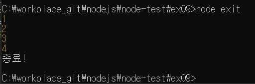

실행중인 노드 프로세스를 종료합니다.
서버에 이 함수를 사용하면 서버가 멈추므로 서버에는 거의 사용하지 않습니다.
하지만 서버 외의 독립적인 프로그램에서는 수동으로 노드를 멈추게 하기 위해 사용합니다.
setInterval로 반복되고 있는 코드를 process.exit()로 멈춰보겠습니다.
// exit.js
let i = 1;
setInterval(() => {
if (i === 5) {
console.log('종료!');
process.exit();
}
console.log(i);
i += 1;
}, 1000);

1부터 4까지 표시한 뒤, i가 5가 되었을 때 종료하도록 했습니다.
process.exit 메서드는 인자로 코드 번호를 줄 수 있습니다.
인자를 주지 않거나 0이면 정상 종료를 뜻하고, 1을 주면 비정상 종료를 뜻합니다.
만약 에러가 발생해서 종료하는 경우에는 1을 넣어주면 됩니다.
지금까지 자주 쓰이는 내장 객체에 대해 알아보았습니다.
타이머와 콘솔, 프로세스, 모듈은 기본적인 기능이지만 앞으로도 계속 사용됩니다.
또한, 노드는 여러 가지 강력한 기능을 모듈로 제공합니다.
다음 절에서는 노드가 어떤 기능들을 제공하는지 알아보겠습니다.